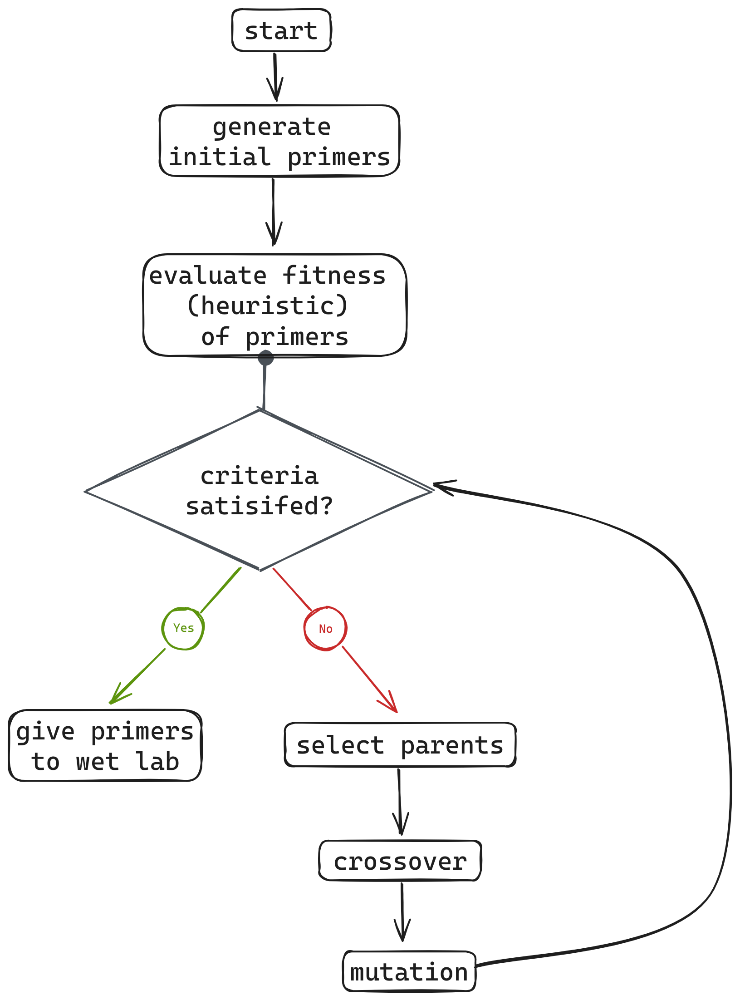
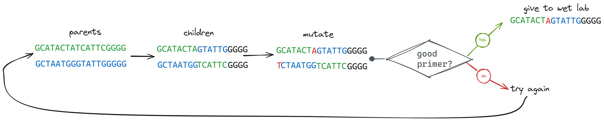
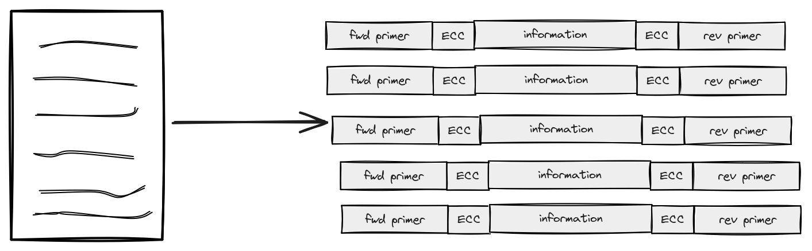
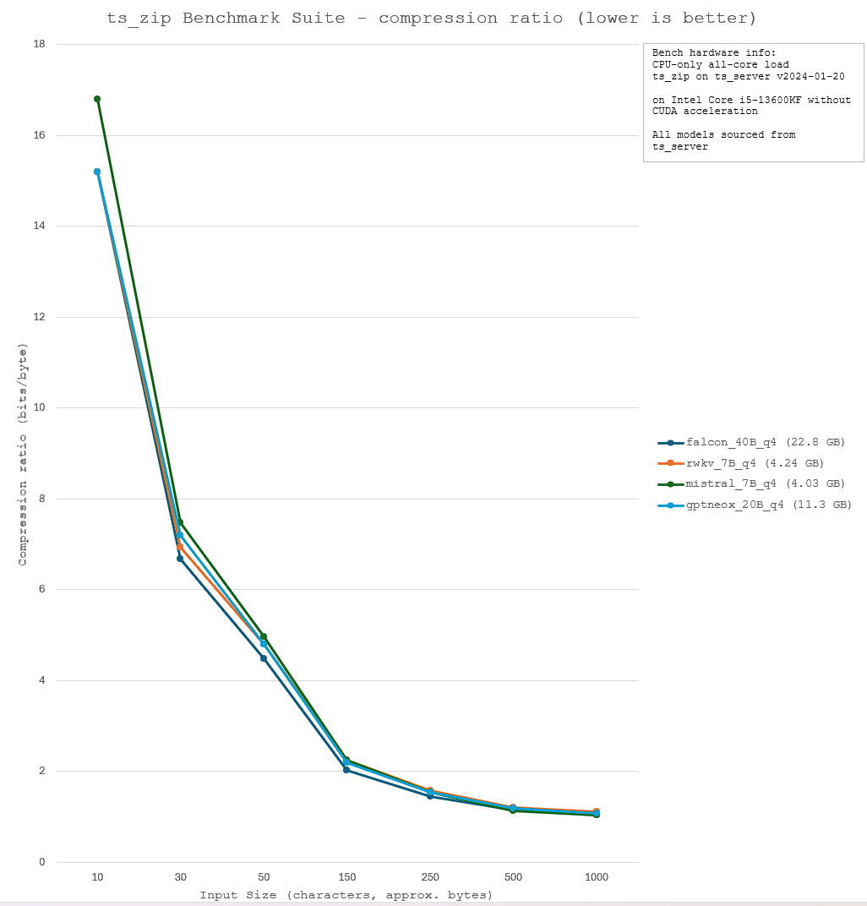
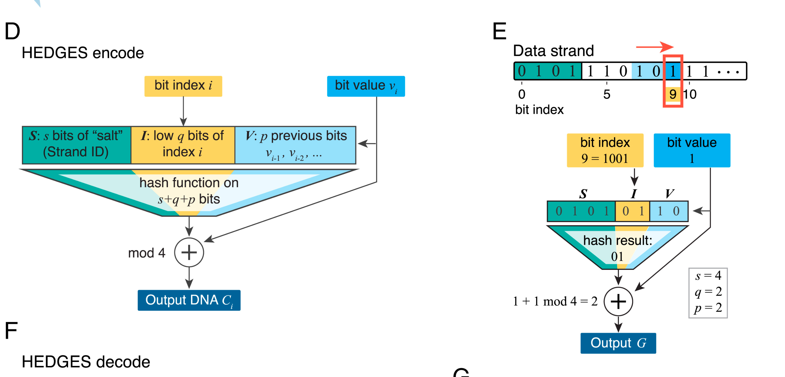
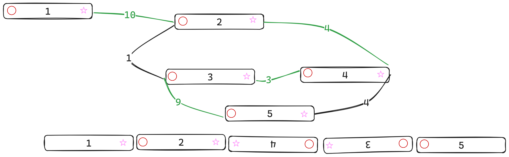
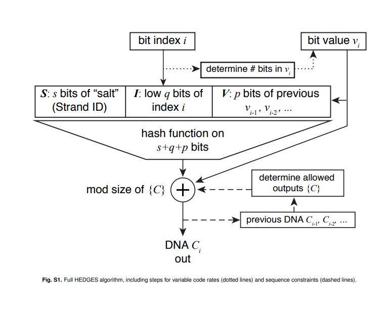

Enhancing DNA Storage with Synthetic Biology: Software
UBC iGEM
Project Description
Our project aims to tackle the growing need for a better, more energy-efficient data storage medium compared to current magnetic and optical data storage options by means of synthetic biology. Currently, we aim to achieve this through 2 separate tracks:
Developing an enzymatic DNA synthesis platform that can elongate a single-stranded DNA (ssDNA) in a template-independent manner. The synthesized ssDNA strand will then be converted to a more stable, double-stranded DNA (dsDNA) and inserted into a plasmid for long-term data storage.
Developing a data encoding/decoding pipeline that allows binary files (used by computers) to be stored in a ternary format compatible with our DNA synthesis platform, retrieved, and converted back into binary.
Goals
In Silico:
Demonstrate ability to encode and decode information someone may store in long-term storage, in the 1000s of nucleotides long.With wet lab:
Demonstrate ability to encode and decode a 100 nucleotide sequence with 30% error.Plan
DBTL 1: March to April
Implement a barebones pipeline, and see how much error can be tolerated in 100 nucleotide long DNA sequences with in silico testing.
DBTL 2: April to May
Redefine algorithms to tolerate up to 30% error in 100 nucleotide long DNA sequences, with in silico testing.
DBTL 1: Proof of Concept
- Encoding
- Error Correction
- Decoding
- ChaosDNA
What programming language are we using?
Rust
- systems programing language that is fast, memory efficient and memory-safe
- expressive type system, great documentation, robust tooling
- most admired language among developers
Encoding
- Primer Generation
- Sequence Generation
Primer Generation
Why generate our own primers?
- act as unique identifiers for information
- required for PCR amplification
- specify requirements for TdT enzyme
How? Using a genetic algorithm.
Why use a genetic algorithm?
- type of optimization algorithm
- uses a set of constraints to produce heuristics to determine best parent candidates, which go on to produce children population
Primer design fits this description!
Schematic
Example: two chosen parents
Sequence Generation
Binary to Nucleotides
Many encoding formats exist:
- Base 4 Encoding: 0 → A, 1 → T, 2 → G, 3 → C
- Church Encoding: 0 → A or C, 1 → T or G
- Base 2 Encoding: 00 → A, 11 → T, 01 → G, 10 → C
- HEDGES (key-autokey cipher) ECC: (hash(input) + bit)mod4 → Base 4 Encoding
These encoding methods will ultimately be tested in silico...
Binary to Nucleotides
Some limitations...
- short strands (100 nt)
- high rate of deletion errors (30%)
Short strands?
Blocking data
- requires we generate unique primers per strand
- allows for parallel synthesis of DNA strands
Short strands?
To encode the UBC iGEM sponsorship package...
- 1.8 MB → 1.8 106 bytes → 1.44 * 107 bits → 180000 strands of DNA
- assuming each DNA strand's information portion is 80 unique bases and we are using HEDGES Encoding
- we will require compression...
Short strands?
High rate of deletion errors?
For the first iteration, we want to see what percentage of deletion errors we can correct for with minimal error correction. Some ways of reducing rate of deletion errors or preventing deletion errors include that we will explore in further DBTLs are:
- synthesizing shorter sequences (more blocks of shorter length)
- more complex encoding strategies
- more complex error correction methods (inner and outer codes)
High rate of deletion errors?
HEDGES error-correcting codes: Why?
- corrects for mutations and deletions, not prevalent type of error in traditional media storage
- form of inner code: bits that encode for information
HEDGES error-correcting codes
Redundacy is enforced in the encoding strategy.
Press, W. H., Hawkins, J. A., Jones, S. K., Schaub, J. M., & Finkelstein, I. J. (2020). HEDGES error-correcting code for DNA storage corrects indels and allows sequence constraints. Proceedings of the National Academy of Sciences, 117(31), 18489–18496. https://doi.org/10.1073/pnas.2004821117What does this mean?
HEDGES uses a hash function to encode redundancy and generate the base to be synthesized.
What's a hash function?
- maps data of arbitrary size to a fixed-size value
- fast to compute hash values
- very low chance of returning the same hash value for two different hash inputs
We will also use a established checksum algorithm to generate a checksum to signal if error correction is needed.
HEDGES error-correcting codes: Rationale
"Hashing each bit value withits strand ID, bit index, and a few previous bits “poisons” bad decoding hypotheses, allowing for correction of indels."
"In summary, the algorithm encodes information as a stream of nucleotides such that any single decoding error in either nucleotide identity or nucleotide position will “poison” the downstream predictions. Thus, on decoding, there will be onlyone good-scoring chain of guesses—the correct one."
Press, W. H., Hawkins, J. A., Jones, S. K., Schaub, J. M., & Finkelstein, I. J. (2020). HEDGES error-correcting code for DNA storage corrects indels and allows sequence constraints. Proceedings of the National Academy of Sciences, 117(31), 18489–18496. https://doi.org/10.1073/pnas.2004821117HEDGES error-correcting codes: Rationale
- designed with orthogonality in mind: can add other error correction codes without interference, such as RSC
- variable paramters, so we can tune to our specific DNA synthesis
- MIT license, implementions online in C++ and Python
Press, W. H., Hawkins, J. A., Jones, S. K., Schaub, J. M., & Finkelstein, I. J. (2020). HEDGES error-correcting code for DNA storage corrects indels and allows sequence constraints. Proceedings of the National Academy of Sciences, 117(31), 18489–18496. https://doi.org/10.1073/pnas.2004821117
Decoding
- Sequence Alignment
- Error Correction
Sequence Alignment
we will most likely use either (or combination of):
- Sanger Sequencing
- NGS
De Novo Assembly
Why implement de novo assembly?
- no reference template, so de novo assembly is required
- important proof of concept to demonstrate our software can put back together a DNA sequence of 1000s of bases long
De Novo Assembly
greedy graph search
Why greedy graph search?
- the exact solution is NP-hard problem
- our sequences will be at most 1000-3000 bases long, so being greedy will usually yield the exact solution anyways
Error Correction
How does this work?
- we are given a DNA sequence, and assuming we have correctly decoded bits[0...i-1], and we want bits[i]
- we use the hash function from encoding stage to "guess" what the correct base should be
- if we correctly guess the base, we continue searching that branch, otherwise assign a cumulative penality score or abandon that branch
HEDGES error-correction code: Reminder
Press, W. H., Hawkins, J. A., Jones, S. K., Schaub, J. M., & Finkelstein, I. J. (2020). HEDGES error-correcting code for DNA storage corrects indels and allows sequence constraints. Proceedings of the National Academy of Sciences, 117(31), 18489–18496. https://doi.org/10.1073/pnas.2004821117
Error Correction
 Press, W. H., Hawkins, J. A., Jones, S. K., Schaub, J. M., &
Finkelstein, I. J. (2020). HEDGES error-correcting code for DNA
storage corrects indels and allows sequence constraints.
Proceedings of the National Academy of Sciences,
117(31), 18489–18496.
https://doi.org/10.1073/pnas.2004821117
Press, W. H., Hawkins, J. A., Jones, S. K., Schaub, J. M., &
Finkelstein, I. J. (2020). HEDGES error-correcting code for DNA
storage corrects indels and allows sequence constraints.
Proceedings of the National Academy of Sciences,
117(31), 18489–18496.
https://doi.org/10.1073/pnas.2004821117
ChaosDNA
- an in-silico tool for generating faulty DNA sequences
Why?
ChaosDNA
- an in-silico tool for generating faulty DNA sequences
- will allow us to prove our software tool can deal with files of more realistic sizes (MB)
- and enable us to work with DNA sequences of varying levels of deletion, insertion and mutation errors
After DBTL 2?
DBTL 3: May to June
Implement DNA Storage Alliance specifications, and do in silico testing on DNA sequences with 1000s of nucleotides.
DBTL 4 and 5: June to July
Test our software on sequences synthesized by wet lab, and redefine algorithms with in silico testing and wet lab data.
Future Directions
- DNA Storage Alliance specifications
- Outer Codes: GC
- Graphical User Interface
- SVGs
DNA Storage Alliance specifications
"Unlike traditional storage media such as tape, HDD, and SSD, DNA does not have a fixed physical structure, a built-in controller, or a way to address different regions of the media linearly, and thus needs a mechanism to start reading or “booting up” a DNA archive that does not rely on such a structure. The SNIA DNA Archive Rosetta Stone (DARS) working group, one of four working groups in the DNA Data Storage Alliance aimed at defining standards for DNA data storage systems, has developed two specifications to enable archive readers to find the sequence to begin booting up the data."
https://www.snia.org/news_events/newsroom/dna-data-storage-alliance-releases-its-first-specificationsOuter Codes: GuessCheck
Graphical User Interface
SVGs and QR Codes
Scalable Vector Graphics
Store shapes as mathematical equations rather than individual pixels. Further compressible through traditional mechanisms or aforementioned text compression mechanisms.
QR Codes
Designed to store redundant information, enabling extreme error correction. Can be efficiently stored in many formats, including SVG or PNG.